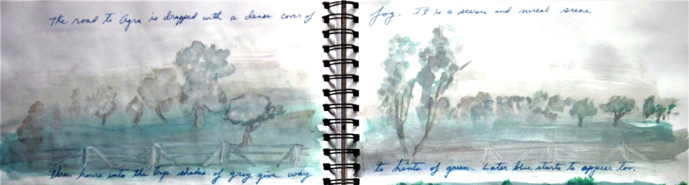
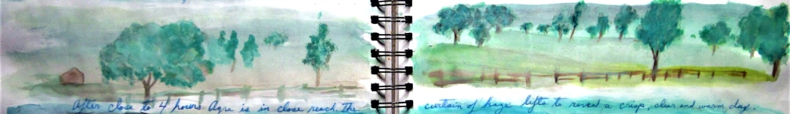
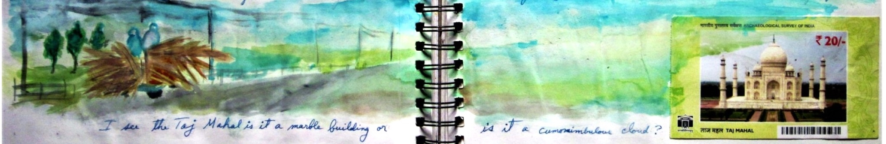
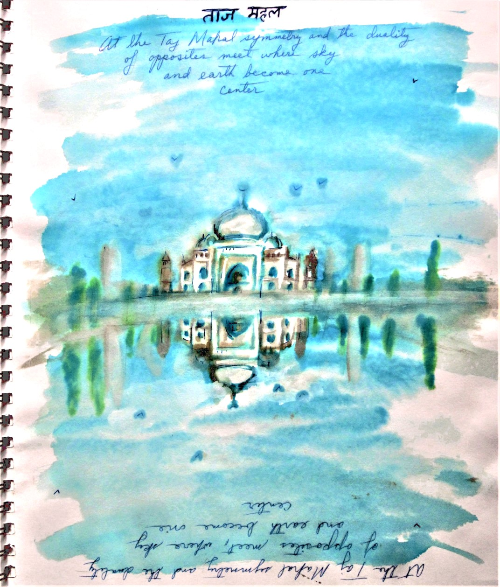

The Breath Before Beauty
The journal’s first pages hold urban tremors. They're sketches of honking streets, their lines jagged as stress. Then, the watercolors begin to sigh: trees emerge like green prayers, their branches stretching toward the promise of quietude. A pathway appears. It leads away.

Fog as a Forgotten Luxury
How Mist Becomes Meditation: The middle spread floats in pearlescent haze. Brushstrokes dissolve Delhi’s smog into Agra’s dreaming fog. That's nature’s balm for city-weary eyes.

Like Tagore’s line "Clouds come floating into my life… no longer to carry rain", this mist carries only hush.
The Ticket as a Tiny Rebellion

500 Rupees for a Glimpse of Eternity. A crumpled entry ticket collaged beside currency. The Taj’s silhouette on both. One is priced and one is priceless. Here, art asks: Can love be taxed? The watercolor bleeds its answer: true monuments outlive empires.
Symmetry as a Silent Psalm
The final painting holds its breath. The Taj and its inverted twin meet at the waterline. It's a perfect sama (balance), as in qawwali songs where earth and heaven harmonize. My journal’s border whispers: "Here, even opposites marry."

Duality’s Embrace
The reflection pool becomes a mirror for the soul. Like Bulleh Shah’s verse "I searched the whole world, only to find You within", the Taj teaches: beauty doubles when still water, and still hearts catch the light.
Delhi asks for your minutes; the Taj gives you back your millennia.

Richard Diaz
Art whispers in three languages: the subject (what meets the eye), the form (the hand’s silent dance), and the content (the heart’s hidden echo). Decode them, and suddenly, you’re not just seeing, you’re listening.